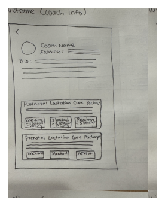
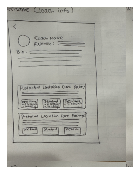
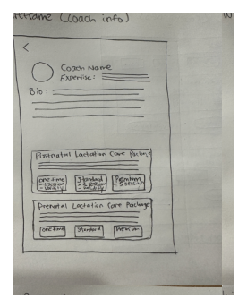

UX Design
Wireframes Sketch

 

Overview: Streamlined navigation and introduced strategic pricing to enhance the coach-client experience.
Role: UX Researcher, UX/UI Designer
Toolkit: Figma, FigJam, Pencil and Paper
MissPoppins is an app that connects parents with expert coaches through
It's a one-stop platform for parenting needs like sleep, nutrition, development, and wellness.
The goal is to understand parents' needs, preferences, and pain points when seeking coaching services and accessing parenting resources.
1.
How parents navigate the process of finding the right coach
2.
What their expectations for consultations and ongoing support
3.
How they engage with articles, webinars, and community features
Common Information Sources
Confusing Information Architecture for App
Package Pricing
Community and Peer Support (Mentorship)
Resource and Information Accessibility
(To improve organization and clarity, I added subcategories to provide more detailed insights related to the primary topics)
This research aims to inform design improvements that enhance usability, streamline access to resources, and create a supportive and user-friendly experience.
1. Competitive analysis
2. User interviews
Competitors excel in personalized support, community engagement, and comprehensive services but often lack direct-to-consumer accessibility.
Build a strong mobile experience, foster community features, and offer accessible services beyond employer partnerships.
Address accessibility gaps by combining proactive care, personalized support, and community-driven features for all parents.
user interviews conducted
The affinity diagram below uses different colors to represent insights from each participant:
1. How might we create a platform that offers flexibility in rescheduling appointments to accommodate the busy schedules of parents?
Before
Currently, the app lacks a scheduling feature, requiring users to communicate with the coach via chat after purchasing a package, which is inconvenient for both parties.
After
Adding a scheduling calendar with flexible rescheduling capabilities will streamline the process and reduce effort for both users and coaches.
Providing real-time availability updates, along with reminders, will allow parents to reschedule directly through the app without needing to contact support.
2. How might we design a package or session model that feels intuitive and manageable for users, ensuring they aren't overwhelmed by options?
Iyengar and Lepper Jam Study: This study shows that too many choices can overwhelm individuals, leading to lower satisfaction and reduced likelihood of making a decision.
Decoy Effect: Adding a strategically priced option can influence users to choose a more favorable or premium tier.
Before
The app's current package page is cluttered and disorganized, presenting users with a wide range of session numbers and price points.
This lack of uniformity leads to confusion and makes selecting a package overwhelming.
After
By incorporating the Decoy Effect into the session and pricing structure, and clearly labeling and describing each tier with a focus on their specific benefits, the decision-making process becomes simpler, reducing decision fatigue and creating a more user-friendly experience.
Highlighting popular or recommended packages can help users feel more confident in their choice and reduce the time and effort spent evaluating all available options.
3. How might we design a navigation system that simplifies access to resources and eliminates user frustration?
Before
The app's rigid category-based organization lacks intuitive pathways, making it difficult for users to quickly find relevant content.
After
For example, users can ask questions like "Which coaching package is best for first-time parents?" "What are some quick tips for calming a crying baby?" or "Can you help me find articles on toddler sleep training?"
The AI will provide responses based on the app's verified expert-reviewed content, ensuring accurate and reliable information.
4. How might we build a community that ensures the advice shared is trustworthy and credible?
1. Develop a mentorship community where parents can connect with mentors or peers who have relevant experience.
2. Enable an open chat feature that is monitored and reviewed by Generative AI for moderation, ensuring that shared advice is credible and any inappropriate or misleading information is flagged or removed promptly.
